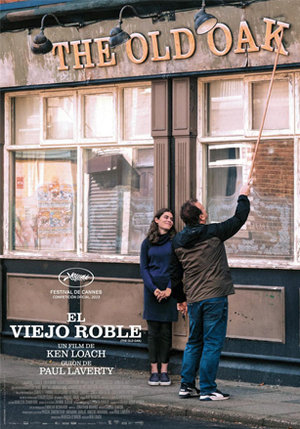

Elegida de la semana
El aroma del pasto recién cortado (2024)
Pablo es un profesor universitario casado y con dos hijos. Comienza un romance secreto con una estudiante, sin imaginar las consecuencias. Al mismo tiempo, Natalia, profesora universitaria, casada y con dos hijas, se lanza a un romance secreto con un estudiante. Dos historias que se intercalan y reflejan; una protagonizada por un hombre, la otra por una mujer.
- Puntuación
- Director
- Productora
- Cast

- Celina Murga
- Barraca Producciones
- Marina de Tavina, Joaquin Furriel, Alfonso Tort, Romina Peluffo
Cartelera
Clásicos
-

El viejo roble
El viejo roble
El futuro del último pub que queda, The Old Oak, en un pueblo del noreste de Inglaterra, donde la gente está abandonando la tierra a medida que se cierran las minas. Las casas son baratas y están disponibles, por lo que es un lugar ideal para los refugiados sirios. -

Tipos de gentileza
Tipos de gentileza
Es una fábula tríptica que sigue a un hombre sin elección que intenta tomar las riendas de su propia vida; a un policía alarmado porque su esposa, desaparecida en el mar, ha regresado; y a una mujer decidida a encontrar a alguien específico con una habilidad , destinada a convertirse en un prodigioso líder espiritual. -
El aroma del pasto recién cortado
El aroma del pasto recién cortado
Pablo es un profesor universitario casado y con dos hijos. Comienza un romance secreto con una estudiante, sin imaginar las consecuencias. Al mismo tiempo, Natalia, profesora universitaria, casada y con dos hijas, se lanza a un romance secreto con un estudiante. Dos historias que se intercalan y reflejan; una protagonizada por un hombre, la otra por una mujer. -

El silencio
Tipos de gentileza
Luego de permanecer en silencio durante 25 años, Astrid, la esposa de un prestigioso abogado, ve cómo el equilibrio de su familia se desmorona cuando sus hijos inician su propia búsqueda de justicia. -

La sustancia
La sustancia
Elisabeth Sparkle, una actriz de las más famosas, es despedida repentinamente de su programa. Entonces se siente atraída por un misterioso medicamento nuevo: La Sustancia. Lo único que necesita es una inyección y, así, renace, temporalmente, como una hermosa chica de veintitantos años.
Estrenos
-

El Jockey
El Jockey
Remo Manfredini es una leyenda del turf, pero su conducta excéntrica y autodestructiva comienza a eclipsar su talento. Abril, jocketa y pareja de Remo, espera un hijo suyo y debe decidir entre continuar con su embarazo o seguir corriendo. -
Stella víctima y culpable
Stella víctima y culpable
Stella crece en Berlín durante el gobierno del régimen nazi. Sueña con una carrera como cantante de jazz, a pesar de todas las medidas represivas que la obligan a esconderse con sus padres en 1944, su vida se convierte en una tragedia culpable. -
Alma y Oskar
Alma y Oskar
Viena, Austria, 1912. El pintor Oskar Kokoschka, considerado uno de los principales representantes del movimiento expresionista, mantiene una tumultuosa relación, tanto profesional como amorosa, con la compositora Alma Mahler. -
Longlegs
Longlegs
Lee Harker, una nueva y talentosa agente del FBI, ha sido asignada a un caso sin resolver de un asesino en serie. A medida que la investigación se complica y se descubren pruebas ocultistas, Harker se da cuenta de que existe un vínculo personal con el despiadado asesino y debe actuar con rapidez. -

Romper el círculo
Romper el círculo
Lily Bloom ha pasado su vida superando las cicatrices de una infancia difícil y finalmente se establece en Boston para cumplir su sueño de abrir su propio negocio. Su vida parece encaminada cuando conoce al carismático Ryle Kincaid, y lo que comienza como un encuentro fortuito se convierte en una relación complicada.